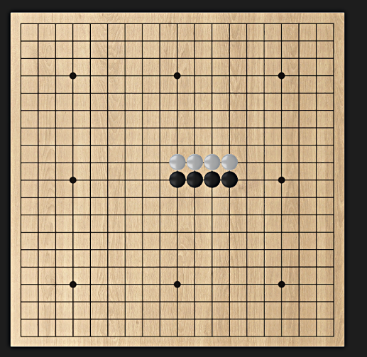
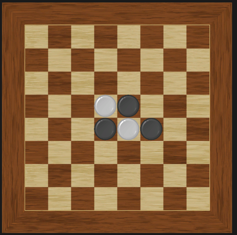

오목과 오델로에서 공통으로 사용되는 부분 찾기
오목과 오델로의 특징


오목 : 돌을 놓았을 때 한 방향으로 "같은" 색깔의 돌이 있어야 규칙이 적용됩니다.
오델로 : 돌을 놓으려면 한 방향으로 "다른" 색깔의 돌이 있어야 돌을 놓을 수 있고, 규칙이 적용됩니다.
오목과 오델로의 공통점 : 돌을 놓았을 때 모든 방향으로 규칙을 적용해야 합니다.
저는 "모든 방향으로 규칙을 적용" 이라는 부분에 중점을 두었습니다.
"모든 방향에 규칙을 적용한다"보다는 "필요한 "방향"에만 규칙을 적용할 수는 없을까?"라는 생각으로부터 시작되었습니다.
오목과 오델로의 특징을 반대로 살펴본다면
오목 : 돌을 놓았을 때 탐색하려는 방향에 있는 돌이 "다른" 색깔이면 탐색할 필요가 없습니다.
(오목은 똑같은 색깔이 5개가 한 줄에 있어야 이기는 게임이니까요.)
오델로 : 돌을 놓았을 때 탐색하려는 방향에 있는 돌이 "같은" 색깔이면 돌을 놓을 수가 없습니다.
(오델로는 현재 칸과 옆 칸의 색깔이 같다면 바꿀 수 있는 색깔이 없기에 돌을 놓을 수가 없습니다.)
이를 바탕으로 1차원 배열 하나를 선언하여 현재 자리의 모든 방향에 대한 탐색 함수를 만들고
현재 돌의 색깔과 옆 칸의 돌의 색깔이 같다면 = 1 , 다른 색깔이라면 = 2 , 만약 아무것도 없는 칸이라면 = 0을 넣어서 필요한 방향만을 구할 수 있도록 만들었습니다.
그다음은 1차원 배열(탐색을 해야 하는 방향)과 현재 돌을 놓은 자리를 이용하여 오목과 오델로에 맞는 규칙을 구현하여 추가하였습니다.